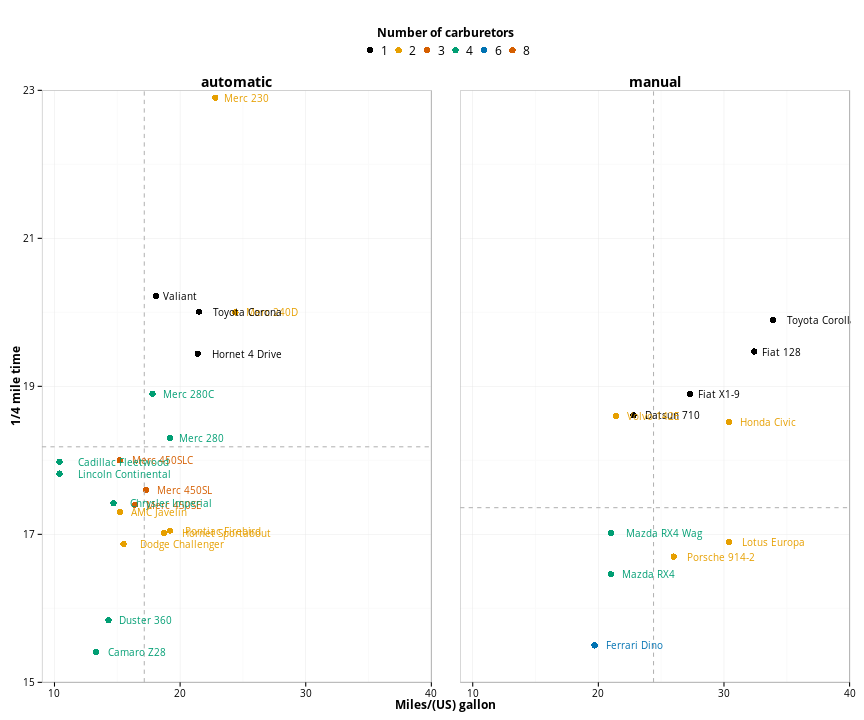
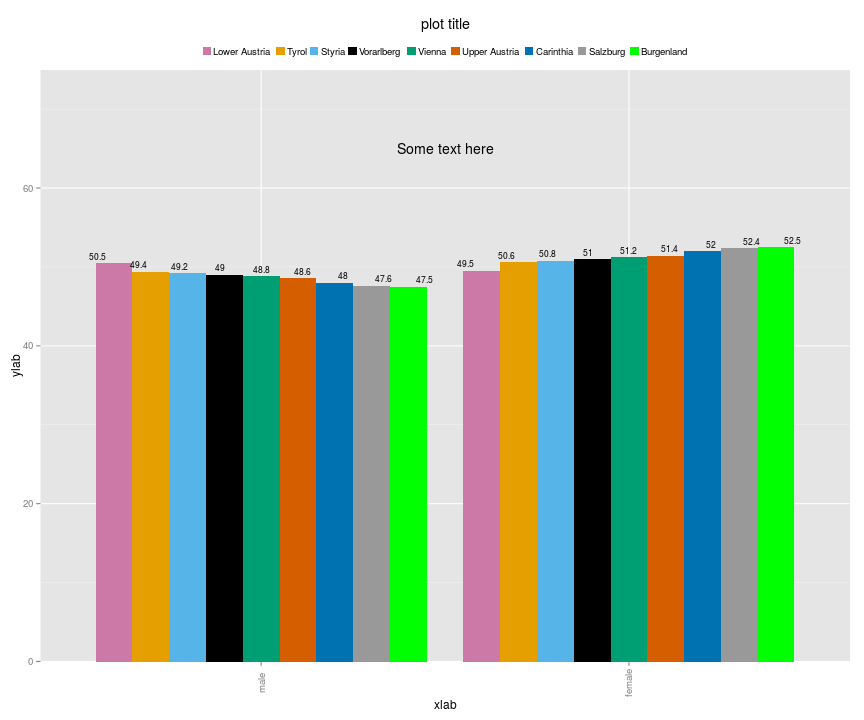
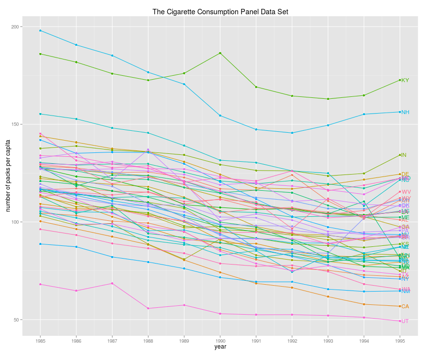
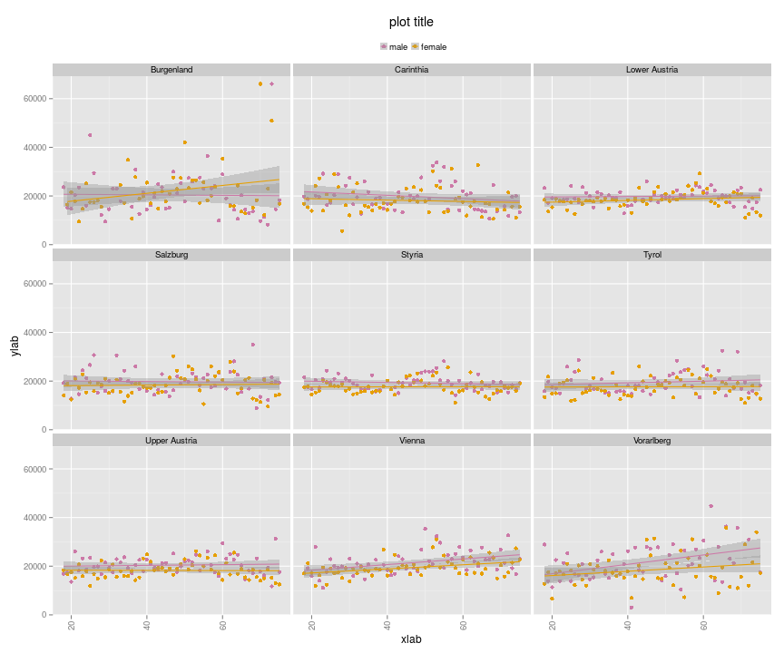
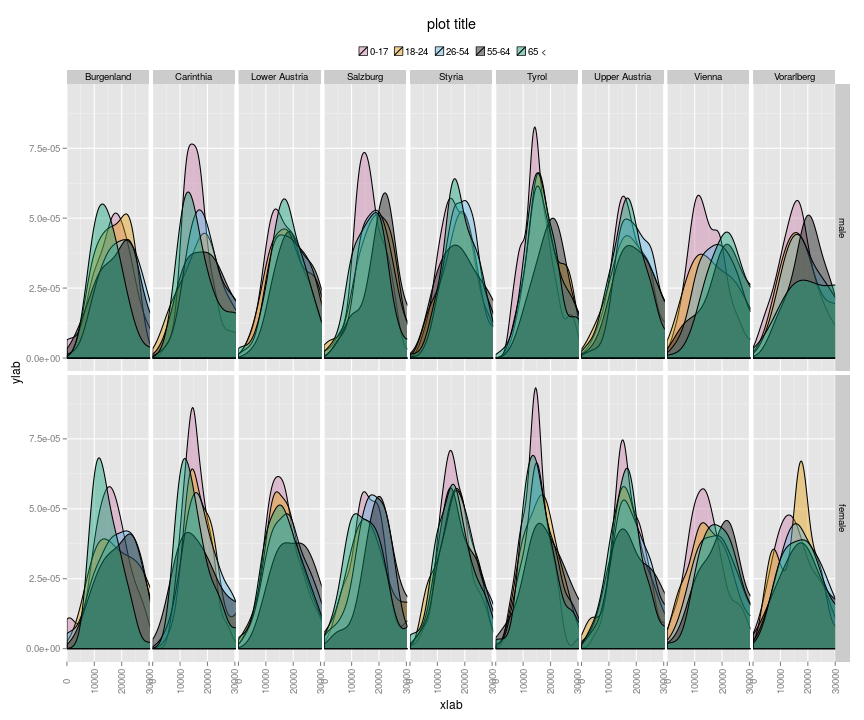
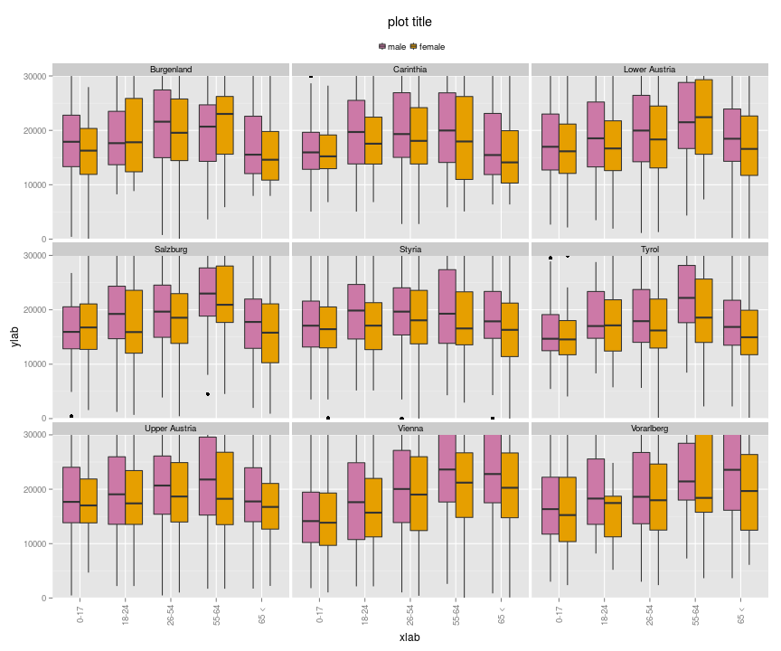

library(grid)
library(ggplot2)
mtcars$brands <- row.names(mtcars)
mtcars$am_c[mtcars$am == 0] <- "automatic"
mtcars$am_c[mtcars$am == 1] <- "manual"
mtcars$am_c <- factor(mtcars$am_c)
# keskiarvoviivat
h.lines <- data.frame(am_c=levels(mtcars$am_c), xval=c(mean(mtcars[mtcars$am_c == "automatic",]$qsec),
mean(mtcars[mtcars$am_c == "manual",]$qsec)))
v.lines <- data.frame(am_c=levels(mtcars$am_c), xval=c(mean(mtcars[mtcars$am_c == "automatic",]$mpg),
mean(mtcars[mtcars$am_c == "manual",]$mpg)))
plot <- ggplot(mtcars, aes(x=mpg,y=qsec,label=brands,color=factor(carb)))
plot <- plot + geom_point(size = 3)
plot <- plot + facet_grid(.~am_c)
plot <- plot + geom_vline(aes(xintercept=xval), data=v.lines, linetype = "dashed", color = "grey70")
plot <- plot + geom_hline(aes(yintercept=xval), data=h.lines, linetype = "dashed", color = "grey70")
plot <- plot + geom_text(family="Open Sans", size=3.5, hjust=-.2, show_guide = F)
plot <- plot + labs(x="Miles/(US) gallon",
y="1/4 mile time")
plot <- plot + theme_minimal() +
theme(legend.position = "top") +
theme(text = element_text(family = "Open Sans", size= 12)) +
theme(legend.title = element_text(size = 12, face = "bold")) +
theme(axis.text= element_text(size = 10)) +
theme(axis.title = element_text(size = 12, face = "bold")) +
theme(legend.text= element_text(size = 12)) +
theme(strip.text = element_text(size = 14, face="bold")) +
guides(colour = guide_legend(override.aes = list(size=4))) +
theme(panel.border = element_rect(fill=NA,color="grey70", size=0.5,
linetype="solid"))
plot <- plot + coord_cartesian(xlim=c(9,40),ylim=c(15,23))
plot <- plot + scale_color_manual(values = c("#000000", "#E69F00", "#D55E00", "#009E73","#0072B2","#D55E00"))
plot <- plot + guides(color = guide_legend(title = "Number of carburetors", title.position = "top", title.hjust=.5))
plot <- plot + theme(panel.margin = unit(2, "lines"))
plot

library(ggplot2)
library(laeken)
data(eusilc)
df <- eusilc
head(df)
## db030 hsize db040 rb030 age rb090 pl030 pb220a py010n py050n py090n
## 1 1 3 Tyrol 101 34 female 2 AT 9756.25 0 0
## 2 1 3 Tyrol 102 39 male 1 Other 12471.60 0 0
## 3 1 3 Tyrol 103 2 male <NA> <NA> NA NA NA
## 4 2 4 Tyrol 201 38 female 7 AT 12487.03 0 0
## 5 2 4 Tyrol 202 43 male 1 AT 42821.23 0 0
## 6 2 4 Tyrol 203 11 male <NA> <NA> NA NA NA
## py100n py110n py120n py130n py140n hy040n hy050n hy070n hy080n hy090n
## 1 0 0 0 0 0 4273.9 2428.11 0 0 33.39
## 2 0 0 0 0 0 4273.9 2428.11 0 0 33.39
## 3 NA NA NA NA NA 4273.9 2428.11 0 0 33.39
## 4 0 0 0 0 0 0.0 1549.72 0 0 2.13
## 5 0 0 0 0 0 0.0 1549.72 0 0 2.13
## 6 NA NA NA NA NA 0.0 1549.72 0 0 2.13
## hy110n hy130n hy145n eqSS eqIncome db090 rb050
## 1 0 0 0 1.8 16090.69 504.5696 504.5696
## 2 0 0 0 1.8 16090.69 504.5696 504.5696
## 3 0 0 0 1.8 16090.69 504.5696 504.5696
## 4 0 0 0 2.1 27076.24 493.3824 493.3824
## 5 0 0 0 2.1 27076.24 493.3824 493.3824
## 6 0 0 0 2.1 27076.24 493.3824 493.3824
manual.color <- scale_color_manual(values=c("#CC79A7","#E69F00",
"#56B4E9","#000000",
"#009E73","#D55E00",
"#0072B2","#999999",
"#00FF00","Dim Grey",
"#56B4E9","#000000",
"#009E73","#D55E00",
"#0072B2","#999999"))
manual.fill <- scale_fill_manual(values=c("#CC79A7","#E69F00",
"#56B4E9","#000000",
"#009E73","#D55E00",
"#0072B2","#999999",
"#00FF00","Dim Grey",
"#56B4E9","#000000",
"#009E73","#D55E00",
"#0072B2","#999999"))
library(ggplot2)
library(grid)
tbl <- data.frame(prop.table(table(df$db040,df$rb090),1) * 100)
tbl$Freq <- round(tbl$Freq, 1)
# ordering the levels of rdb040 by femla share
df.order <- subset(tbl, Var2 == 'female')
df.order <- df.order[order(df.order$Freq),]
tbl$Var1 <- factor(tbl$Var1, levels = df.order$Var1)
# bar plot
ggplot(tbl, aes(x=Var2,y=Freq,label=Freq,fill=Var1)) +
geom_bar(position="dodge", stat="identity") +
geom_text(position = position_dodge(width=1), vjust=-0.5, size=3) +
labs(x="xlab",y="ylab") +
labs(title="plot title") +
theme(axis.text.x = element_text(angle=90, vjust= 0.5)) +
coord_cartesian(ylim=c(0,75)) +
annotate("text", x = 1.5, y = 65, label = "Some text here") +
theme(legend.title=element_blank()) +
theme(legend.key.size = unit(3, "mm")) +
theme(legend.position="top") +
manual.fill

df <- read.csv("http://vincentarelbundock.github.com/Rdatasets/csv/Ecdat/Cigarette.csv")
df$year <- as.numeric(df$year)
cnames <- subset(df, year == 1995)
ggplot(df,
aes(x=year,y=packpc,group=state,color=state)) +
geom_line() +
geom_point() +
scale_x_continuous(breaks=1985:1995) +
geom_text(data=cnames, aes(x=year,y=packpc,label=state),
size=4, hjust=-0.2) +
labs(x="year",y="number of packs per capita") +
labs(title="The Cigarette Consumption Panel Data Set") +
theme(legend.position="none")

df <- eusilc
# aggregate a table
tbl <- aggregate(eqIncome~db040+rb090+age,
median,
data=df)
# subset to cover ages 18-75
tbl <- subset(tbl, age > 17 & age < 76)
# plot
ggplot(tbl, aes(x=age,y=eqIncome,color=rb090)) +
geom_point() +
facet_wrap(~db040) +
geom_smooth(method=lm, se=TRUE) +
labs(x="xlab",y="ylab") +
labs(title="plot title") +
theme(axis.text.x = element_text(angle=90, vjust= 0.5)) +
theme(legend.title=element_blank()) +
theme(legend.key.size = unit(3, "mm")) +
theme(legend.position="top") +
manual.color

df <- eusilc
df$age_class[df$age < 18] <- '0-17'
df$age_class[df$age >= 18 & df$age < 25] <- '18-24'
df$age_class[df$age >= 25 & df$age < 55] <- '26-54'
df$age_class[df$age >= 55 & df$age < 65] <- '55-64'
df$age_class[df$age >= 65] <- '65 <'
ggplot(df, aes(x=eqIncome,fill=age_class)) +
geom_density(alpha=.4) +
facet_grid(rb090~db040) +
labs(x="xlab",y="ylab") +
labs(title="plot title") +
theme(axis.text.x = element_text(angle=90, vjust= 0.5)) +
theme(legend.title=element_blank()) +
theme(legend.key.size = unit(3, "mm")) +
theme(legend.position="top") +
coord_cartesian(xlim=c(0,30000)) +
manual.fill

ggplot(df, aes(x=age_class,y=eqIncome, fill=rb090)) +
geom_boxplot() +
facet_wrap(~db040) +
labs(x="xlab",y="ylab") +
labs(title="plot title") +
theme(axis.text.x = element_text(angle=90, vjust= 0.5)) +
theme(legend.title=element_blank()) +
theme(legend.key.size = unit(3, "mm")) +
theme(legend.position="top") +
coord_cartesian(ylim=c(0,30000)) +
manual.fill
